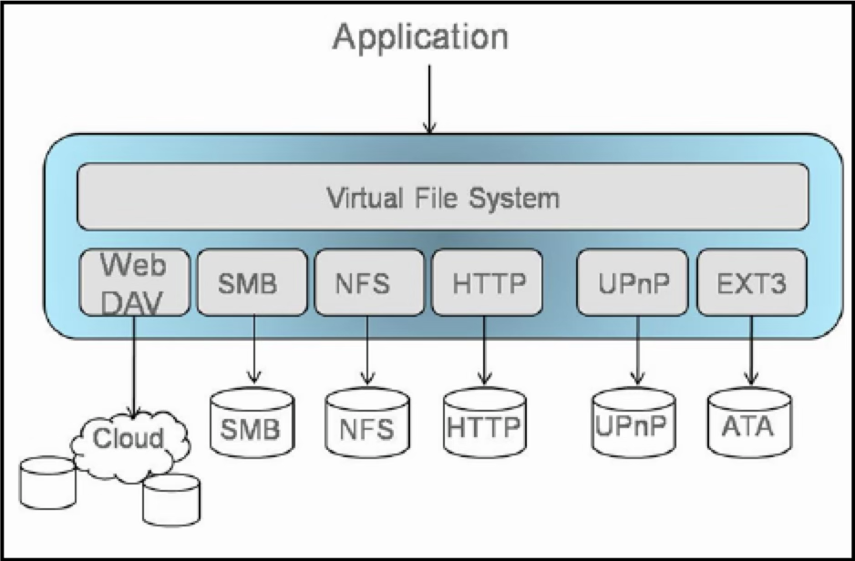
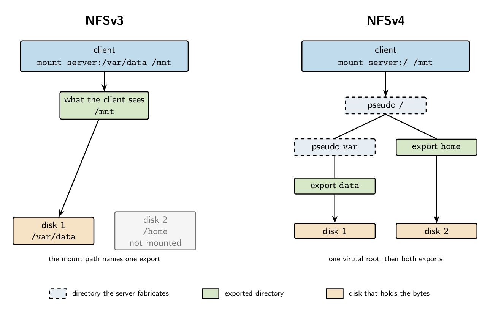
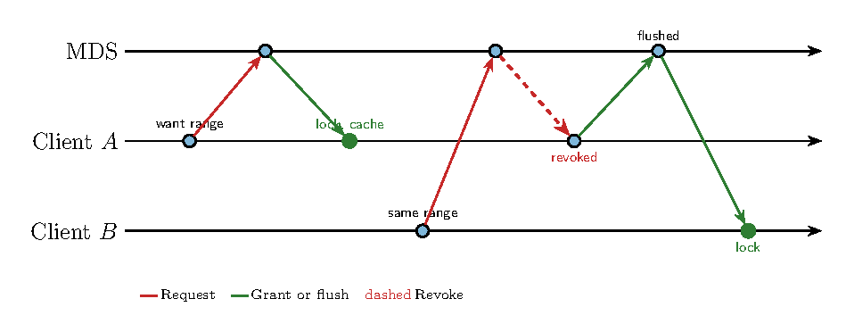
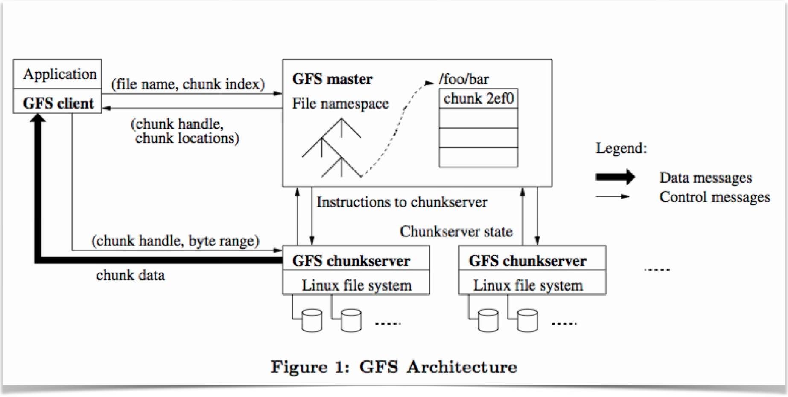
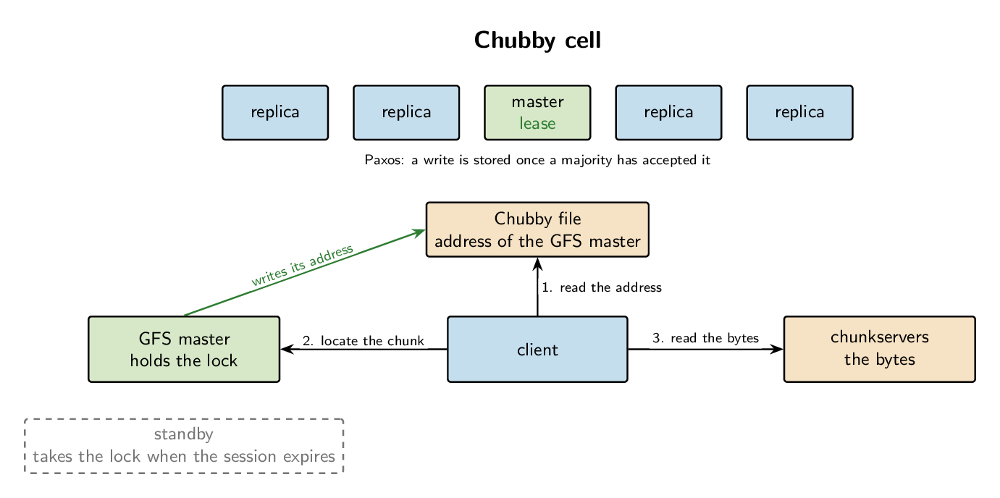

Tema 9. Distributed File Systems (DFS)
Sistemas Actuales de Computación
Filesystem
What are filesystems? A filesystem is the methods and data structures that an operating system uses to keep track of files on a disk or partition; that is, the way the files are organized on the disk.” by The Linux Documentation Project
On Unix the same calls serve regular files, pipes, and devices. A program does not see which one it is talking to.
From the call down to the disk:
- Application:
open,read,write,close - Logical file system: path, permissions, timestamps, links, inode
- Block mapping: which blocks belong to the file, and which are free
- Block device: read or write one block, with no file names
- Device driver: the commands for that particular disk
- Hardware: the controller and the disk
Distributed file systems
The aim is to keep that same call when the bytes live on another machine.
HTTP, FTP, and similar protocols do not do this. The user opens a connection and copies the file. The program then reads a local copy.
That copy is a poor substitute:
- Editing a few bytes still moves the whole file
- The client may not have room for the copy
- Two clients with two copies no longer share one file, so their writes diverge
Remote Access model
File service provides functional interface: create, delete, read bytes, write bytes, etc.
Advantages:
- Client gets only what’s needed
- Server can manage coherent view of file system
Problem:
- Possible server and network congestion:
- Servers are accessed for duration of file access
- Same data may be requested repeatedly
Activity
A Network Access Storage (NAS) is a DFS?
No. It’s a single, centralized, and autonomous device, even though it may use protocols such as NFS or SMB.
Design issues of a DFS
Transparency: Integrated into OS or access via APIs?
Consistency:
- What happens if more than one user accesses the same file?
- What if files are replicated across servers?
Security
- The local OS is no longer in charge
- Replication
Reliability What happens when the server or client dies?
State Should the server keep track of clients between requests?
Design issues of a DFS (expanded)
| Stateful | Stateless |
|---|---|
| Shorter requests | Each request must identify file and offsets |
| Better performance in processing requests | Client & Server can crash and recover |
| Cache coherence is possible | Client caching can affect consistency |
| File locking is possible | File locking not possible |
| No extra space for state | |
| No open/close operations needed |
Design issues of a DFS (expanded)
Caching can improve performance for repeating accesses.
File data could reside in several places:
- Server’s disk
- Server’s buffer cache
- Client’s buffer cache
- Client’s disk
- …
Options:
- Write-through: checking the server in write operations
- Delayed writes: one bulk updated periodically
- Write on close
- Read-ahead: requests chunks of data
- Centralised control
OS - Virtual File System (VFS)
The VFS is the kernel layer between the system call and every concrete filesystem. read does not know whether the bytes are on an ext4 disk or on an NFS server. It calls the operation registered for that open file.
Four objects carry the call:
- Superblock: one mounted filesystem
- Dentry: one component of a path, cached so the next lookup can skip the disk
- Inode: the file itself: type, permissions, and where the data live
- File: one open. It holds the offset and a pointer to the operations of its filesystem
A pathname is walked component by component. At a mount point the next component belongs to another filesystem, so the VFS switches operation tables and the same read continues.

DFS Classification
- Architecture: who answers the call
- Where the bytes live: a shared disk, or each node’s own disks
- Sharing: what a second client sees when the first writes
- Names: whether the path contains the server
DFS Classification
Classification: architecture
Client-server. A server, or a small set of them, holds the files and the metadata. Clients ask. NFS, CIFS/SMB, 9P, and AFS.
Cluster, with a master for metadata. One master records where each block lives. The other nodes store the blocks. Built for large data. Google File System\(^*\) and HDFS. Lustre and PanFS split the work the same way, for a computing cluster.
Peer-to-peer. No central server. Every node can store and can serve. IPFS, GlusterFS when no node owns the metadata, and the lookup layer under Chord and Mnet.
DFS Classification
Classification: where the bytes live
Shared disks. The servers see one common set of disks, usually a SAN. The file system coordinates who may write which block. The disks are not private to a node.
Shared-nothing. Each node has its own disks. Files are replicated or striped across those disks over the network. GFS, HDFS, AFS, and GlusterFS. An NFS server is the small case: one machine and its own disks.
DFS Classification
Classification: sharing
Append, or write once. A file is written to the end, or written once and then only read. The master can order the appends. GFS and HDFS.
Session. The client caches the file and sends it back on close. Other clients see the new contents after that close. AFS and Coda.
Concurrent read and write. Several clients may change any byte of an open file. The system needs locks, or the writes conflict. NFS and Ceph.
DFS Classification
Classification: names
Location transparency. One namespace. The path does not say which disk holds the file. AFS, HDFS, and an NFS tree after it has been mounted.
The server is in the path. The client names the host in order to open the file, as in \\server\share\file. SMB is used that way. NFS hides the server only once an administrator has mounted it.
DFS Classification
Summary classification
| Topic | Option | Examples |
|---|---|---|
| Architecture | Client-server | NFS, CIFS/SMB, 9P, AFS |
| Architecture | Master for metadata | GFS, HDFS, Lustre, PanFS |
| Architecture | Peer-to-peer | IPFS, GlusterFS, Chord, Mnet |
| Where the bytes live | Shared disks | servers on one SAN |
| Where the bytes live | Shared-nothing | GFS, HDFS, AFS, GlusterFS |
| Sharing | Append or write once | GFS, HDFS |
| Sharing | Session, visible on close | AFS, Coda |
| Sharing | Concurrent read/write | NFS, Ceph |
| Names | One namespace | AFS, HDFS, NFS |
| Names | Server in the path | SMB (\\server\share) |
My choice: Specific Distributed File Systems
Network File System (NFS) Linux y Unix
Server Message Block (SMB) Windows
Lustre (parallel storage, HPC)
Colossus (successor to Google File System, GFS)
Network File System (NFS)
NFS mounts the tree of a known server and serves it through the local calls (Sandberg et al. 1985). The program uses: open, read, and write.
NFSv2 (89) and NFSv3 (95) are stateless and split the work across several helper protocols. NFSv4 (00) was designed again as one stateful protocol, for high-latency networks and for stronger security (Haynes and Noveck 2015).
NFS: from stateless to leases
In v2 and v3 the server does not remember who has a file open. Every read carries the credentials, the file handle, and the offset.
NFSv4 keeps a table of clients, open files, and locks.
- A lease is a time-limited claim. The client renews it. When the lease expires, the server drops that client’s locks
- After a reboot the server opens a grace period. It accepts reclaim operations from the previous clients, and it refuses new opens until that period ends
NFS: one port, many operations
v3 used a separate protocol to mount, another for locks, and another to watch whether a peer was alive. Each one could land on a different port.
v4 uses a single protocol on TCP 2049.
A COMPOUND request packs several operations in one message: look up the name, open the file, read the bytes. The server runs them in order and returns one reply. On a wide-area network, Internet, that removes a round trip per step.
NFS: one tree
In v3 the client mounted a server path, such as server:/var/data.
v4 builds a pseudo-filesystem: one virtual root over the exported directories. The client mounts server:/ and walks the exports as one tree. The path no longer names which disk sits behind the server.

NFSv4: delegations
The server may hand a client the right to use its own cache:
- Read delegation. No other client is writing. Reads are served from the local cache
- Write delegation. This client is the only writer. It may delay sending the new bytes
If another client asks for the file, the server recalls the delegation on the callback channel. The holder flushes its cache, and only then does the server serve the new client.
NFS: identity and protection
v3 required the same numeric user id on the client and on the server.
v4 names a user as user@domain. A local map turns that string into the id of each machine.
RPCSEC_GSS carries Kerberos: each side authenticates the other, the receiver detects a modified message, and the traffic can be encrypted.
The permission model is an NFSv4 ACL (Access Control Lists), one entry per user or group. It is finer than the Unix owner, group, and other bits, and it is close to the Windows ACL.
My choice: Specific Distributed File Systems
Network File System (NFS) Linux y Unix
Server Message Block (SMB) Windows
Lustre (parallel storage, HPC)
Colossus (successor to Google File System, GFS)
Server Message Block (SMB)
SMB is the Windows file-sharing protocol. CIFS is the old name of the SMB1 dialect (Hertel 2003). Samba serves the same protocol from Unix. SMB2 and SMB3 are the versions in use (Microsoft 2024).
A client reaches a file in one of three ways:
- A Universal Naming Convention (UNC) path,
\\server\share\file. The server name is part of the path - A drive letter mapped to that share. The letter hides the server, as an NFS mount does
- On Linux,
mount -t cifs //server/share /mnt. The VFS then servesopen,read, andwritefor that tree
The connection itself is a short sequence on TCP 445: negotiate the dialect, authenticate, connect to one share, open the file.
SMB on the four previous classification
- Architecture. Client-server, like NFS. One known server holds the share. SMB is not a metadata master with data nodes, and it is not a peer-to-peer store
- Where the bytes live. On that server’s own disks. One server is the small shared-nothing case
- Sharing. Concurrent read and write. The server keeps the open and the locks, and it can hand a client a cache lease
- Names. The UNC path names the server. A mapped drive or a CIFS mount hides it behind one local path
SMB: state, leases, and protection
SMB has always remembered the session. The server holds the tree connection, the open files, and the byte-range locks. A client that disappears does not keep a lock forever: SMB2 uses a lease, and the server drops it when the client stops renewing. That is the same idea as the NFSv4 lease.
An oplock, and the SMB2 lease that replaced it, is the delegation:
- Several clients may hold a read lease and serve reads from cache
- One client may hold a write lease and delay the upload
- When another client needs the file, the server breaks the lease. The holder flushes, then the new open proceeds
SMB3 signs every message and can encrypt the session. Authentication is NTLM or Kerberos. The permission list on the file is the Windows ACL, the model NFSv4 moved towards.
My choice: Specific Distributed File Systems
Network File System (NFS) Linux y Unix
Server Message Block (SMB) Windows
Lustre (parallel storage, HPC)
Colossus (successor to Google File System, GFS)
Lustre
Lustre is a parallel file system for a computing cluster (Braam 2004). One file is striped across many disks so that many clients can read and write it at once.
Three roles:
- Metadata server (MDS). Names, directories, permissions, and the layout: which data servers hold each piece of the file
- Object storage server (OSS). The bytes. Each OSS serves one or more storage targets
- Client. A kernel module.
mount -t lustre mgs:/fs /mntputs the tree in the VFS, and the program keeps usingopen,read, andwrite
An open asks the MDS for the layout. The reads and writes then go straight to the storage servers, not back through the MDS. NFS and SMB send every byte through the one server that also holds the names.
Lustre ideas
- Architecture. A master for metadata and many data nodes, like GFS and HDFS. It is not one SMB share, and it is not a peer-to-peer store
- Where the bytes live. Shared-nothing. Each storage server has its own disks, and a file is striped across them
- Sharing. Concurrent read and write, with POSIX semantics. A distributed lock covers the byte range a client is using, so two writers do not silently diverge
- Names. One namespace. The path does not name the disk. The client learns the layout from the MDS at open time
Lustre: locks and failure
The lock is the cache permission, in the same role as an NFSv4 delegation or an SMB lease. While a client holds a read or write lock it may use its cache. When another client needs that range, the lock is revoked, the holder flushes, and the new client proceeds.

The MDS is the point that must stay up for lookups and creates. Storage servers are independent: losing one of them loses the stripes it held, and the other stripes stay readable. A pair of metadata servers can fail over. Clients reconnect to the survivor and keep the same tree.
My choice: Specific Distributed File Systems
Network File System (NFS) Linux y Unix
Server Message Block (SMB) Windows
Lustre (parallel storage, HPC)
Colossus (successor to Google File System, GFS)
GFS and Colossus
Three Google papers sit on the same storage stack. Colossus is the file system that replaced GFS inside Google; it has no paper of its own.
- GFS (Ghemawat et al. 2003). A file system for huge files: one master, chunkservers, and appends
- MapReduce (Dean and Ghemawat 2004). A batch computation that reads and writes those files
- Bigtable (Chang et al. 2006). A sparse sorted table stored on GFS

Google context
A Google data center is a warehouse of commodity machines. The jobs that fill it (crawling, indexing, serving search) split into many tasks that run at once.
A parallel file system matches that shape. One file is spread across many servers, and the two kinds of information live apart:
- Data. The bytes of the file
- Metadata. The name, permissions, timestamps, size, and the list of servers that hold each piece of those bytes
A lookup touches the metadata. The bulk of the I/O goes straight to the servers that store the data.
Google assumptions (I)
The design starts from the workload in the GFS paper (Ghemawat et al. 2003), which breaks the usual file-system expectations (small files, short lifetimes).
- Failure is routine. The file system is thousands of disks and machines. At any moment some of them are down, so the system monitors itself and keeps serving
- Files are large. A typical file is 100 MB or more, and multi-GB files are the common case. The block size and the I/O path are chosen for those files. Small files still work; they are not the case the design optimizes
- Few files, for this scale. On the order of a few million files. A design built for billions of kilobyte files would spend its time on metadata
Google assumptions (II)
How those files are used:
- A file grows by appending. A write into the middle of an existing file almost never happens
- Once written, a file is mostly read, and often from start to finish
- Reads are large streaming reads, plus a smaller number of small random reads
- Writes are large appends. Hundreds of tasks may append to the same file at once: a crawl log, or the merge of many sorted runs
Two consequences for the interface:
- The API is designed together with the applications. The write they need is an atomic record append, so concurrent writers do not have to coordinate among themselves
- Applications accept a relaxed consistency model. In return, the file system stays simple while many clients append
GFS principles
- Metadata on its own server. One master keeps, in memory, the namespace and the map from each file to its chunks: which chunkservers hold each chunk. The client learns that map, then reads and writes the chunkservers directly. Metadata traffic stays small; data bandwidth is a separate path
- Large chunks. A conventional file system uses blocks of about 4 KB and is tuned for small files. GFS uses 64 MB chunks, more than a thousand times larger, so a huge file is a short list of chunks and the master stays small enough to keep in memory
- Replication. Each chunk is stored on several chunkservers, three by default. When a machine dies, the master places new copies of its chunks on machines that are still up. Note https://dl.acm.org/doi/pdf/10.1145/3503646.3524296
- A library, not a kernel file system. There is no POSIX system-call interface and no VFS module. A program links a user-level library, whose operations include the usual create, read, and write, plus snapshot and record append. Each GFS server is an ordinary process and stores its chunks as files on the local Linux file system
GFS Architecture

Chubby
Chubby is Google’s lock service for systems whose parts fail independently (Burrows 2006). A cell holds locks and tiny files. It is built to stay available and to be simple for its clients. It does not store the bulk data of GFS.
A cell is a small set of replicas, usually five. They run Paxos to elect one master and to agree on each update.
- The master holds a lease. For as long as the lease is valid the other replicas will not become master, so the cell has a single master
- Clients send reads and writes to that master. A write is durable once a majority of the replicas has accepted it. The master answers reads from its own copy
- The interface is a small Unix-like tree of directories and files. A client takes an advisory reader or writer lock on a whole file, and it can subscribe to changes in that file
- Each client keeps a session with periodic keep-alives. When the session expires, Chubby releases that client’s locks. Clients cache file contents, and the master invalidates a cached copy before a later write completes
Chubby and the GFS master
GFS needs exactly one master. Two masters would hand out conflicting leases for the same chunk.
GFS appoints that master with a Chubby lock (Burrows 2006):
- Candidate masters compete for one lock. The replica that holds the lock is the GFS master for the life of its Chubby session
- It publishes its address in a small Chubby file. Clients and chunkservers read that file to learn which process to ask for metadata
- When the master dies, its session expires, the lock is free, and another replica acquires it and publishes the new address
The bytes of a file stay on the chunkservers. A client reads the master’s address from Chubby, asks that master which chunkservers hold the chunk, and then reads the chunk from them.
The 2003 GFS paper still describes one master with its own operation log. Electing that master through Chubby is the later mechanism. Bigtable uses the same pattern to elect its own master.
Appointing the GFS master

Why GFS stopped scaling
Colossus is the cluster file system that replace GFS. The data path of GFS was already the right shape: a client reads a chunk straight from the chunkservers. The limit was the single master (McKusick and Quinlan 2010).
- The whole map sat in one machine. The number of files was however much metadata fit in that machine’s memory. The 64 MB chunk kept the list short enough to fit
- Every control operation waited there. Create, open, and the lookup of a chunk location all ran on that one process
- A dead master stopped the namespace. Failover brought it back. Until the new master was serving, no client could open a file. The master tolerated faults; the namespace was not highly available
Search was the workload that hit the wall: more files, and more metadata, than one master could hold.
Colossus
Colossus keeps the split between control and bytes, and it distributes the control (Google Cloud 2021). That distributed metadata is the contribution. The rest of the design follows from it.
- Many curators share the namespace. A client asks a curator to create or look up a file. The loss of one curator takes its share of the names with it, and the other curators keep serving
- The map lives in Bigtable. Curators store file metadata there, so the map is sharded across many machines and survives a curator restart. Google describes clusters more than 100 times the largest GFS clusters. The metadata of Search is the reason they give
- D servers hold the bytes. The read and the write go directly from the client to those servers, as they did to the chunkservers
- Custodians maintain the disks. They rebalance free space and reconstruct lost fragments in the background. In GFS the master made those decisions on the same path as a lookup
- The client picks the encoding. The library can store a file with a RAID code. A custodian rebuilds a lost fragment, and bulk data does not have to keep three full copies
The programming model stays the one GFS was built for: files grow by appending. Once the map is sharded, one cluster holds far more files, survives the loss of a metadata server, and still sends the bytes straight to the disks.
GFS and Colossus stays inside Google.
The Apache Software Foundation
The Foundation is a non-profit incorporated in 1999. It was created as a legal home for the Apache HTTP Server, which a group of developers, Brian Behlendorf among them, had been writing since 1995.
- The Apache Software Foundation
- How the Foundation works
- Apache License 2.0
- Projects and sponsors
- Hadoop, used in the next activity
Apache Ozone
It consists of volumes, buckets, and keys:
- Volumes are similar to user accounts. Only administrators can create or delete volumes.
- Buckets are similar to directories. A bucket can contain any number of keys, but buckets cannot contain other buckets.
- Keys are similar to files
(OLD) Activity
Hadoop File System (The setting up not easy…)
Thus: https://hub.docker.com/r/vulhub/hadoop
Requirements: Docker & DockerCompose
(OLD) Activity: dockercompose.yaml.
services:
namenode:
image: vulhub/hadoop:2.8.1
ports:
- "9870:9870"
environment:
- HDFS_CONF_dfs_namenode_name_dir=file:///hadoop/dfs/name
- CLUSTER_NAME=vulhub
- HDFS_CONF_dfs_replication=1
command: /namenode.sh
volumes:
- namenode-data:/hadoop/dfs/name
datanode:
image: vulhub/hadoop:2.8.1
environment:
- HDFS_CONF_dfs_datanode_data_dir=file:///hadoop/dfs/data
- CORE_CONF_fs_defaultFS=hdfs://namenode:8020
- CLUSTER_NAME=vulhub
- HDFS_CONF_dfs_replication=1
command: /datanode.sh
volumes:
- datanode-data:/hadoop/dfs/data
resourcemanager:
image: vulhub/hadoop:2.8.1
environment:
- CORE_CONF_fs_defaultFS=hdfs://namenode:8020
- YARN_CONF_yarn_log___aggregation___enable=true
command: /resourcemanager.sh
ports:
- "8088:8088"
nodemanager:
image: vulhub/hadoop:2.8.1
environment:
- CORE_CONF_fs_defaultFS=hdfs://namenode:8020
- YARN_CONF_yarn_resourcemanager_hostname=resourcemanager
- YARN_CONF_yarn_log___aggregation___enable=true
- YARN_CONF_yarn_nodemanager_remote___app___log___dir=/app-logs
command: /nodemanager.sh
volumes:
namenode-data:
datanode-data: